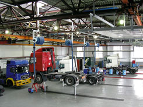
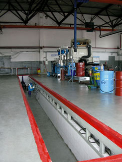
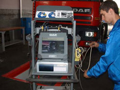
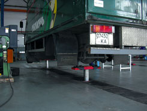
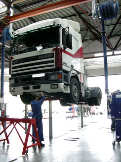
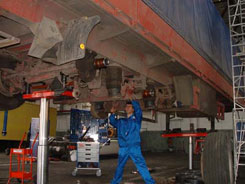
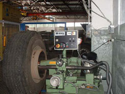
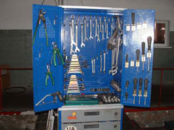

ПРОФІЛАКТИЧНЕ ОБСЛУГОВУВАННЯ ДОРОЖНЬОГО ТРАНСПОРТУ
Роль профілактичного обслуговування
Механічні машини та обладнання потребують регулярного обслуговування для надійного функціонування. Автомобілі не є виключенням з цього правила. Більш того, вантажівки часто використовуються в важких умовах, тому регулярний сервіс - дуже важлива складова.
Сервіс вантажівок складається з профілактичного обслуговування та ремонтів. Профілактичне обслуговування здійснюється через постійні інтервали, котрі базуються на пробезі вантажівки чи певному інтервалі часу. До уваги беруться також умови використання (навантаження, тривалість маршруту, дорожні умови і таке інше). Міжсервісні інтервали значно подовжились останніми роками завдяки поліпшенню технології автомобілебудування та виробництва мастильних матеріалів.
Подовження інтервалів профілактичного обслуговування в свою чергу потребує підвищення рівня самого обслуговування. Адже, від цього залежать і фінансові результати діяльності транспортних компаній і безпека руху і вплив на навколишнє середовище.
- Як поліпшити рівень профілактичного обслуговування?
- Як впливає профілактичне обслуговування на навколишнє середовище та безпеку руху?
- Які переваги дає регулярне профілактичне обслуговування транспортникам?
Ці, та інші питання, ми хочемо висвітлити в цій статті.
Рівень профілактичного обслуговування значною мірою залежить від якості діагностичних робіт, що виконуються в рамках профілактичного обслуговування. Високий рівень обслуговування та надійна діагностика може виконуватись тільки з використанням сучасного, професійного діагностичного обладнання. Саме такого, яким обладнаний "Трак Центр Лтд".
Навколишнє середовище 
Транспортні засоби мають негативний вплив на навколишнє середовище, зокрема завдяки викидам отруйних речовин двигуна. Останніми роками виробнича індустрія зробила значні зусилля для зменшення отруйних викидів двигунів сконструювавши автомобілі, що відповідають сучасним стандартам викидів (ЄВРО 3). Транспортні компанії, зі свого боку, теж мають сприяти поліпшенню навколишнього середовища, шляхом проведення адекватного профілактичного обслуговування, що , в свою чергу, призводить до зменшення використовування потужності двигуна і, відповідно, шкідливих викидів.
Безпека дорожнього руху 
Технічний стан транспортного засобу значною мірою впливає на безпеку дорожнього руху. Завдяки значної ваги вантажівки, пошкодження, що виникають в результаті дорожньо транспортної аварії з участю вантажівки, мають серьозні наслідки. Тож, належний технічний стан автомобіля має важливе значення для попередження дорожньо транспортних аварій.
Профілактичне обслуговування разом із щорічним технічним оглядом на придатність транспортного засобу до експлуатації грають головну роль в підтриманні автомобіля в належному технічному стані.
Фінансові результати діяльності транспортної компанії
Звичайно, регулярне профілактичне обслуговування потребує певних витрат на виконання робіт, закупівлю матеріалів та запасних частин. З іншого боку, профілактичне обслуговування заощаджує кошти, за рахунок запобігання значно більших витрат в інших категоріях.
Перелік робіт і періодичність профілактичного обслуговування, що веде до мінімізації загальних витрат на експлуатацію автомобіля впродовж строку його життя, рекомендовані кожним виробником автомобілів і наведені в сервісній книжці. Ці рекомендації зроблені на основі глибокого вивчення складових, що мають відношення до оптимізації витрат за рахунок
1. Витрати на профілактичне обслуговування
Профілактичне обслуговування складається з діагностичних та профілактичних робіт, заміни мастил, фільтрів та інших матеріалів. Сучасні вантажні автомобілі потребують профілактичного обслуговування приблизно два рази на рік. Витрати, пов'язані з цим, прогнозовані і знаходяться на рівні, приблизно 0,01Євро/км.
2. Витрати на незаплановані ремонти 
Ремонти робляться у випадках відмов певних вузлів, деталей, чи систем автомобіля. Витрати пов'язані з ремонтом таких відмов значно збільшуються, якщо нехтувати рекомендаціями виробника, що до профілактичного обслуговування. Мета профілактичного обслуговування полягає в тому, щоби, при проведенні діагностичних робіт, з'ясувати майбутні відмови і зробити профілактичний ремонт чи заміну зношеної деталі до її виходу з ладу.
3. Витрати на ремонти несподіваних відмов, що трапляються в дорозі
Певні відмови трапляються в дорозі. Витрати, пов'язані з усуненням таких відмов часом дуже значні. (буксировка автомобіля, очікування запасних частин, штрафи за простой і таке інше). Якісне і своєчасне профілактичне обслуговування - це єдиний механізм усунення небажаних і несподіваних відмов у дорозі.
4. Термін експлуатації автомобіля
Профілактичне обслуговування подовжує термін експлуатації автомобіля.
5. Витрати пального
Профілактичне обслуговування знижує витрати пального, тому що нехтування профілактичним обслуговуванням призводить до погіршення якості мастил та підвищенню сили тертя.
6. Надійність комерційного транспорту
Коммерційний рейтінг транспортної компанії залежить від надійності автомобілів. Надійність автомобілів, в свою чергу, залежить від своєчасного і якісного профілактичного обслуговування.
БАЖАЄМО ВАМ УСПІХУ!